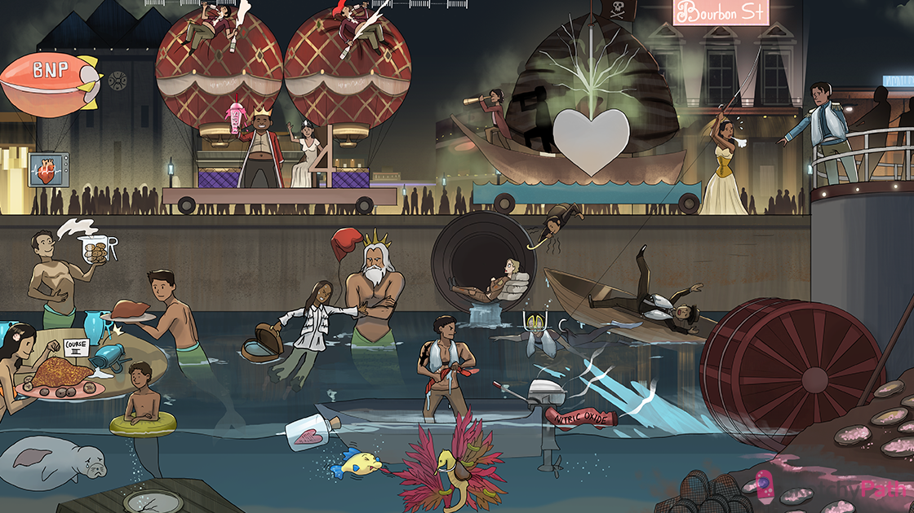

Failing heart balloon: congestive heart failure
Wet life vest prince: left-sided heart failure
Wet pulmonary vest: pulmonary edema (left-sided heart failure)
Pink sea foam in abalone shells: frothy pink transudate on the intra-alveolar surface (left-sided heart failure)
Rusty macro-cages: hemosiderin-laden alveolar macrophages - “heart failure cells” (left-sided heart failure)
Difficult breath: heart failure can cause dyspnea with exertion
Restrictive corset: pulmonary edema reduces lung compliance (left-sided heart failure)
“C” hook fishing line: pulmonary C fibers sense pulmonary edema → dyspnea
Reclining into water: orthopnea (left-sided heart failure)
Gasping awake: paroxysmal nocturnal dyspnea (PND - left-sided heart failure)
bilateral slurping snorkels: bibasilar inspiratory crackles (left-sided heart failure)
Wheezy party blower: peribronchial edema causes wheezing (left-sided heart failure)
Skull and X bones: chest x-ray (CXR - imaging for suspected left-sided heart failure)
White branches over the top sails: cephalization of the pulmonary vessels on CXR (left-sided heart failure)
Infiltrating fog: pulmonary edema looks like fluffy bilateral (“batwing” shape) opacities on CXR (left-sided heart failure)
Curly letter B: Kerley B lines (fluid accumulation between lobes) on CXR (left-sided heart failure)
Shadow on sail: air bronchogram (dark airway against opacified interstitium) on CXR (left-sided heart failure)
Big heart: cardiomegaly on CXR (heart failure)
“Slushi3”: S3 heart sound (more common in systolic heart failure)
Stiff S4 chair: S4 heart sound (more common in diastolic heart failure)
Regurgitating mitral hat jester: dilation of the mitral annulus → mitral regurg (left-sided heart failure)
Systolic spray murmur: left-sided heart failure can present with a systolic murmur (mitral regurg)
Irregularly irregular signal: atrial fibrillation (due to atrial dilation in heart failure)
Dilated balloon: dilated atrium (due to left-sided heart failure)
Damaged nitric oxide exhaust: left-sided heart failure causes damage to the pulmonary vascular endothelium → decreased NO → vasoconstriction
Twisted arterial shirt: damage to the pulmonary vascular endothelium → decreased NO and increased endothelins → vasoconstriction
Smooth muscular shark tattoo: pulmonary vascular remodeling → collagen deposition (intimal hypertrophy) and smooth muscle cell proliferation (medial hypertrophy)
Tense pulmonary tree: left-sided heart failure → pulmonary artery hypertension → right sided heart failure (MOST COMMON CAUSE)
Cork on heart bottle: cor pulmonale (right-sided heart failure due to pulmonary hypertension)
Embolic sea cucumbers: chronic pulmonary emboli → cor pulmonale (right-sided heart failure)
Embolic saddle: a saddle pulmonary embolism → right heart strain and failure
Pushing load: the right ventricle works against an increased afterload (cor pulmonale)
Regurgitating on three peaks: dilation of the tricuspid annulus → tricuspid regurg (right-sided heart failure)
Systolic spray murmur: right-sided heart failure can present with a systolic murmur (tricuspid regurg)
Distended blue jug: jugular vein distension (JVD) seen in right heart failure
Liver knocking over distended jug: hepato-jugular reflux (right-sided heart failure)
Cookie smell from distended jug: Kussmaul sign (JVD increase during inspiration) seen in right-sided heart failure
Swollen sweat pants: peripheral edema (right-sided heart failure)
Wet pleural shirt: pleural effusion (right-sided heart failure)
Wet heart case: pericardial effusion (right-sided heart failure)
Course III: zone 3 (centrilobular) necrosis due to hepatic venous congestion (right-sided heart failure)
Nutmeg sprinkled liver: centrilobular necrosis appears as “nutmeg liver” on gross pathology
Painful liver spot: hepatic congestion causes painful hepatomegaly (right-sided heart failure)
High pressure porthole: portal hypertension seen in right-sided heart failure
Swollen inner tube: ascites due to portal hypertension (right-side heart failure)